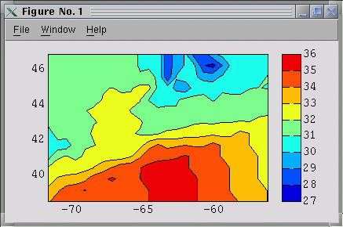

>> lndfill(g2s,[1 1 1]*.75)

|
One problem with generating colorbanded contour plots in MATLAB is that the resolution of typical FEM meshes tends to burden MATLAB when it comes to producing a postscript version of the figure. Each element in the grid is rendered as a patch object, and if shading is turned on, the rendered postscript file actually looks bad. There is no reasonable way to subsample the FEM nodes. The purpose of FDCONT is to provide contouring and vector plotting routines that map FEM node-based data to a finite-difference grid that covers the FEM domain at an arbitrary level of resolution. The resulting figure is better handled by MATLAB regarding postscript printing, and the results are "publication quality". |
FDCONT is written by Dr. Christopher E. Naimie and Brian O. Blanton, is implemented entirely in MATLAB5.1 or higher, and is based on Christopher E. Naimie's hybrid FORTRAN/MATLAB colorbanding routines.
FDCONT is packaged separately from the rest of OPNML/MATLAB, but it REQUIRES several routines from the latest OPNML toolbox. Go to the OPNML/MATLAB webpabes for downloading information.
These web pages describe the FDCONT routines and provide a brief demonstration and an example that generates a figure silimar to the one above. Familiarity with the OPNML/MATLAB routines is assumed, which uses MATLAB5's structure facility for the grid information i (‹fem_grid_struct>).
See a webpage of Chris's for figures generated with these tools.
FDVECTOR - plot vectors from a bfd sampling. FDCONTOUR - contour FE scalar on FD grid FE2FD - interpolate FE data to FD nodes contained in bfd array GENBFD - generate a "basis function data" file for FD contouring LNDFILL - draw land polygons for FEM domain LNDMAKE - create land masking information for FD CONTOURING READ_BEL - read a FEM domain .bel file
Synopsis: FDCONT works as follows: an evenly spaced grid is placed on top of the FEM domain, the FEM-based fields are interpolated to these FD points, vectors are plotted, contours are drawn, and then the FD points that lie outside the FEM domain are masked out by a polygon that describes where the FEM boundary lies.
LNDMAKE
| The function LNDMAKE takes as input a fem_grid_struct and a .bel filename (QUODDY boundary element file) and outputs to disk two files, ‹gridname>.lnd and ‹gridname>.lbe. These files are node and element lists for a polygon that encloses the FEM domain and need only be generated once per domain. They can be placed in the standard location for the given grid, since the OPNML/MATLAB function LOADGRID now searches for these files along with the standard grid files. Alternatively, LOADGRID will search the current working directory for ‹gridname>.lnd.lnd and ‹gridname>.lnd.lbe in case the user chooses to keep these new file locally. LOADGRID attaches two new fields to the fem_grid_struct, fem_grid_struct.lnd and fem_grid_struct.lbe. Subsequent calls to FDCONTOUR require that the land description fields of the ‹fem_grid_struct> be filled. At present. the .bel file must be ordered with the exterior boundary counterclockwise, starting from the western-most boundary node. Islands follow, connected. The OPNML boundary file generator (as well as the fortran code CONVCODES) outputs the .bel file in this order. If the resulting figure looks wrong, then read the .bel file into GENBEL and output is to a new file name. Pass this new file namd to LNDMAKE. This requirement will be removed in future versions of FDCONT. |
Assuming we have a FEM domain loaded into the structure variable g2s, then to generate the land description for the long/lat g2s.5b FEM domain, where g2sll is the fem_grid_struct for the FEM domain, and g2s.5bll.tides.bel is a boundary element file for the g2s.5b grid, type:
>> lndmake(g2sll,'g2s.5bll.tides.bel')LNDMAKE writes the files g2s.5b.lnd and g2s.5b.lbe to the current working directory and displays the land polygons in a figure like the one above.
>> g2s=loadgrid('g2s.5bll')
Searching locally ...
Got g2s.5bll.nod
Got g2s.5bll.ele
Got g2s.5bll.bat
g2s.5bll.bnd not found; computing from g2s.5bll.ele.
Got g2s.5bll.lnd
Got g2s.5bll.lbe
>> bfd=genbfd(fem_grid_struct,[nx ny],outflag);
|
GENBFD is called as: where [nx ny] are the number of FD nodes in the x,y directions with which to cover the FEM domain. If only one integer is passed in ([nx] as opposed to [nx ny]), then GENBFD generates equally spaced nodes, which is preferable for subsampling vector fields (see below). (Type >> help genbfd for more information on the options to GENBFD.) If outflag==1, the bfd array is written to disk as gridname.bfd. It is a "flat" file, and an be loaded as load gridname.bfd. For example, >> bfd=genbfd(g2s,[25 25],0) generates a bfd array called bfd from the g2s FEM domain structure, with 25 x 25 nodes, and does NOT output the bfd array to disk. A figure similar to the one on the right is plotted to show the level of discretization. |
>> fdcontour(bfd,sfe,27,36,1,1)
| The above command tells FDCONTOUR to use the basis information in bfd to interpolate the FE-based array sfe (this one happens to be salinity) over the range 27-36 at 1 psu increments, and to include a colorbar on the axes. The result: |  |
Now, recall that the basis information was computed for points that lie
OUTSIDE of the FEM domain, so there is information where it isn't supposed
to be. Hence the need to mask out the exterior of the FEM grid. This is
why we precomputed the land description information. Call the function
LNDFILL to get the figure on the right:
>> lndfill(g2s,[1 1 1]*.75) |
|
| Lastly, overlay the FEM boundary to outline the exterior and island segments (>> plotbnd(g2s)): |
FDVECTORFDVECTOR is a front-end to VECPLOT2, which handles the extraction and interpolation of the FEM (u,v) data onto the FD points in bfd. FDVECTOR behaves the same as VECPLOT2, except that the (x,y) vector origins are contained in the bfd file, supplied to FDVECTOR as the first argument. Suppose we have a depth-averaged velocity stored in ufe vfe . Then FDVECTOR is called as:>> fdvector(bfd,ufe,vfe) |
>> bfd=genbfd(g2s,[100],0);
>> [c,h]=fdcontour(bfd,sfe,27,36,.5,1);
>> clabel(c,h)
>> h=lndfill(g2s,[.75 .75 .75]);
>> hb=plotbnd(g2s);
>> hvec=fdvector(bfd,ufe,vfe,.75,2,...
'cm/s',-62,39);
>> xlabel('Longitude')
>> ylabel('Latitude')
|